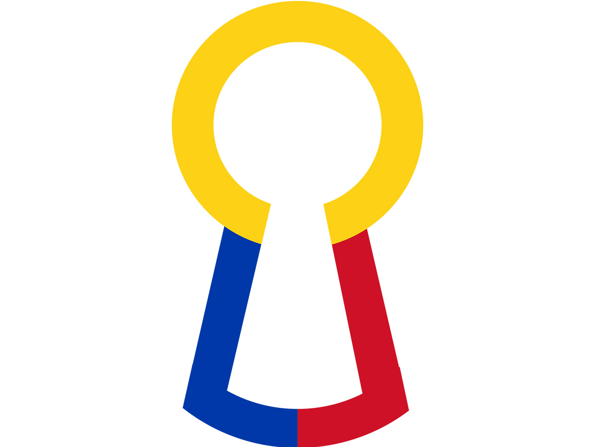

Partner Agencies
Agency Overview

DICT
Department of Information and Communications Technology
The DICT is the primary policy-making and administrative entity of the Executive Branch responsible for planning, developing, and promoting the national ICT development agenda.
DOJ – CTF
Department of Justice – Cybercrime Task Force
The DOJ - Office of Cybercrime (OOC) is the lead government agency responsible for implementing the Cybercrime Prevention Act of 2012 (R.A. 10175).
NBI – CCD
National Bureau of Investigation – Cybercrime Division
The NBI - Cybercrime Division (CCD) serves as the primary law enforcement unit investigating computer-related, internet-facilitated, and high-tech crimes in the Philippines.

NPC
National Privacy Commission
The National Privacy Commission (NPC) is an independent body mandated to administer and implement the Data Privacy Act of 2012 (DPA).